Käytän salttia ubuntu serverillä 22.04.1. Serverin alustana toimii virtual box.
x)
1)
-Perus komentoja linuxissa liikkumiseen, tiedostojen muuttamiseen ja ssh:n käyttö.
-Tärkeiden direktoryjen tehtävät.
2)
-Salt master slave alkeet.
-Slave kontrolli.
3)
-Raportin kirjoittaminen eli kai se mitä tässä teen.
-Pyrkii tekemään selkeää jälkeä, jotta muut voivat toistaa tekemäni asiat.
-Viittauset kuntoon.
a) sudo salt-call --local state.single pkg.installed name=vim
Vim asentui koneelleni saltilla.
b) Siirryin /srv/salt kansioon.
Loin hei.sls kansion
sudoedit hei.sls
Kirjoitin tiedostoon
/tmp/hei.txt:
file.managed:
- source: salt://hei.txt
Loin hei.txt
sudoedit hei.txt
Kirjoitin tiedostoon
HEI MAAILMA!
Menin kotihakemistooni
cd
Laitoin saltin toteuttamaan
sudo salt-call --local state.apply hei
Tarkistin toteuttiko salt haluttuja asioita
cat /tmp/hei.txt
output:
HEI MAAILMA!
c) Haluan nähdä paikalliset dns tiedot
sudo salt-call --local grains.item dns
Listaan paikalliset dns tiedot
e) /srv/salt kansioon tein ssh.sls tiedoston
tiedostoon kirjoitin
ssh:
service.running:
- enable: True
Menin kotihakemistoon ja suljin ssh:n
sudo systemctl stop ssh
Tarkistin, että ssh on pois päältä
sudo service ssh status
Active: inactive (dead), selvästi pois päältä. Yritetään käynnistää saltilla.
sudo salt-call --local state.apply ssh
Tarkitetaan kävikö mitään.
sudo service ssh status
Active: active (running) since 8s ago
Pääsin haluttuun lopputulokseen.
Lähteet:
https://www.youtube.com/channel/UCuE6FxD86hgHhh_l5bK-1VQ/videos
https://terokarvinen.com/2018/salt-states-i-want-my-computers-like-this/
https://terokarvinen.com/2018/salt-quickstart-salt-stack-master-and-slave-on-ubuntu-linux/
x)
Salt quickstart:
Master-slave arkitehtuurin perusteet. Neuvoja arkkitehtuurissa alkuunpääsyyn.
Understanding saltstack:
Artikkeli listaa saltin perusominaisuuksia. Esimerkiksi salt kommunikointi ja sen perustoiminta,
Skaalautuvuus, etähallinnointi jne.
Saltstack fundamentals:
Artikkeli käy läpi saltin asentamisen ja peruskomentoja. Miten kohdentaa komentoja tietylle mini-
onille tai ryhmälle. sls tiedostojen luominen ja state.apply. top.sls toiminta. state.apply ilman
parametrejä aloittaa highstaten=top.sls
Saltstack configuration management: functions:
Artikkeli listaa eri salt state funktioita ja käy läpi niiden toimintaa.
a)
Siirtyminen salt kansioon
cd /srv/salt
Uuden kansion luominen
mkdir h2a
Siirtyminen kansioon
cd h2a
Tiedoston luominen
sudoedit h2a.sls
Kirjoittaa seuraavat komennot kansioon:
Ajetaan saltilla luoma tiedosto haluamille minioneille tai kaikille ’*’:
sudo salt ’omat_minion’ state.apply h2a.
Näytti menneen läpi. Tarkistus toisella koneella: kuva. Lopputulos oli haluttu.
b) Asennetaan salt herra.
sudo apt update
sudo apt-get install salt-master
hostname -I, josta nähdään masterin sijainti eli Ip-osoite.
Asennetaan salt minion samalle koneelle.
sudo apt-get install salt-minion
Kerrotaan minionille masterin sijainti ja nimetään minion.
sudoedit /etc/salt/minion
 Testataan näkyykö minion
sudo salt ’*’ test.ping
Nyt herra-orja arkkitehtuuri on asennettuna samalle koneelle.
c) Ajetaan paikallisesti komento:
sudo salt-call --local state.apply hei
Ajetaan paikallisesti komento:
sudo salt-call --local state.apply hei -l debug
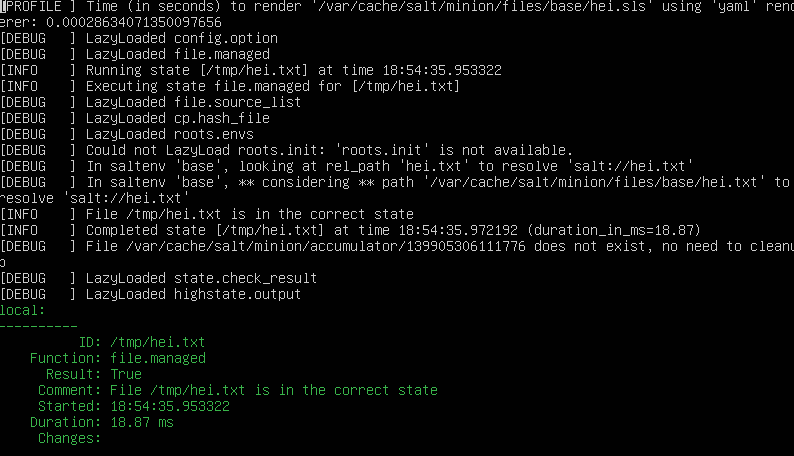
Debug tulos kertoo mitä vaiheita komento toteuttaa.
d) Kone 1.
Avataan palomuuriin reitit masterille:
sudo ufw allow 4505/tcp, sudo ufw allow 4506/tcp
sudo apt update
sudo apt-get install salt-maste
hostname -I, josta nähdään masterin sijainti eli Ip-osoite.
Kone 2.
sudo apt update
sudo apt-get install salt-minion
Kerrotaan minionille masterin sijainti ja nimetään minion.
sudoedit /etc/salt/minion
Testaan yhteys sudo salt ’*’ test.ping
Nyt eri koneille asennettu herra ja orja sekä ne ovat yhteydessä toisiinsa.
Testataan näkyykö minion
sudo salt ’*’ test.ping
Nyt herra-orja arkkitehtuuri on asennettuna samalle koneelle.
c) Ajetaan paikallisesti komento:
sudo salt-call --local state.apply hei
Ajetaan paikallisesti komento:
sudo salt-call --local state.apply hei -l debug
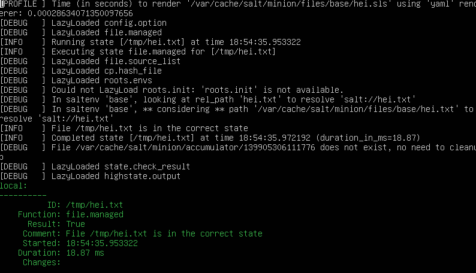
Debug tulos kertoo mitä vaiheita komento toteuttaa.
d) Kone 1.
Avataan palomuuriin reitit masterille:
sudo ufw allow 4505/tcp, sudo ufw allow 4506/tcp
sudo apt update
sudo apt-get install salt-maste
hostname -I, josta nähdään masterin sijainti eli Ip-osoite.
Kone 2.
sudo apt update
sudo apt-get install salt-minion
Kerrotaan minionille masterin sijainti ja nimetään minion.
sudoedit /etc/salt/minion
Testaan yhteys sudo salt ’*’ test.ping
Nyt eri koneille asennettu herra ja orja sekä ne ovat yhteydessä toisiinsa.
a) Hei komento! Tee järjestelmään uusi "hei maailma" -komento ja asenna se orjille Saltilla.
Liitä raporttiisi orjan 'ls -l /usr/local/bin/' tulosteesta ainakin se rivi, jolla näkyy uuden
komentotiedostosi oikeudet.
Käytössä kaksi ubuntu serveriä (versio 22.04.1 LTS). Toisella koneella on master ja toisella
slave salt_test. Saltin versio kummassakin on 3004.1. Päivitetään paketit ja aletaan tekemään.
sudo apt update
sudo apt upgrade
Mennään /srv/salt kansioon ja luodaan sinne uusi kansio shell.
cd /srv/salt
sudo mkdir shell
Shell kansioon luodaan init.sls sekä haluamamme shellscript tiedosto ja kirjoitetaan kansioihin
asiat mitä haluamme scriptin tekevän kun se ajetaan orjille saltilla.
cd shell
sudo nano init.sls
 sudo nano shell.sh
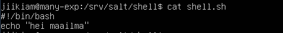
Kokeillaan sheelscriptin toimiminen käsin.
chmod 755 shell.sh
./shell.sh
Ajetaan scripti saltilla orjalle.
sudo salt '*' state.apply shell
Tarkistetaan toimiiko orjalla shellscript ja käydään katsomassa kansion oikeudet.
shell
cd /usr/local/bin
ls -l
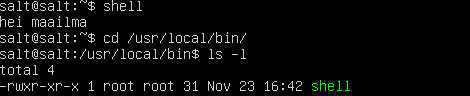
b) whatsup.sh. Tee järjestelmään uusi komento, joka kertoo ajankohtaisia tietoja; asenna
se orjille. Vinkkejä: Voit näyttää valintasi mukaan esimerkiksi päivämäärää, säätä, tietoja
koneesta, verkon tilanteesta...
Sama kuin kohdassa a), mutta luodaan kansio ja scripti nimellä whatsup. Kirjoitetaan scriptiin
mitä tietoja halutaan nähdä.
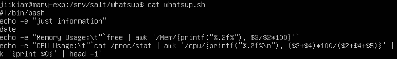
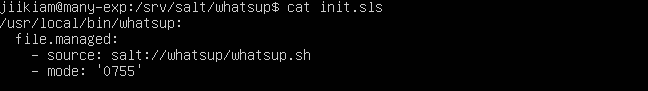
Ajetaan komento saltilla ja tarkistetaan tulos orjalla.
sudo salt '*' state.apply whatsup
whatsup
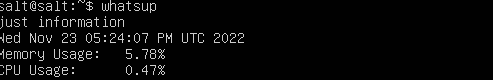
c) hello.py. Tee järjestelmään uusi komento Pythonilla ja asenna se orjille. Vinkkejä: Hei
maailma riittää, mutta propellihatut saavat toki koodaillakin. Shebang on "#!/usr/bin/python3".
Helpoin Python-komento on: print("Hei Tero!")
Mennään /srv/salt kansioon ja luodaan sinne uusi kansio shell.
cd /srv/salt
sudo mkdir tervepy
cd tervepy
Luodaan kansioon init.sls ja python komento. Kirjoitetaan kansiohin seuraavasti.
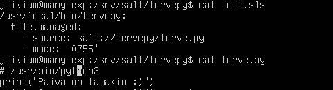
Ajetaan komento saltilla ja Tarkistetaan tulos orjalla.
sudo salt '*' state.apply tervepy
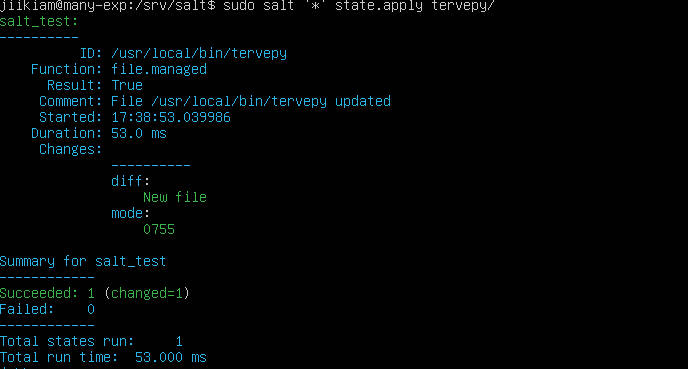
tervepy
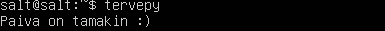
d) Laiskaa skriptailua. Tee kansio, josta jokainen skripti kopioituu orjille.
Tehdään uusi kansio tervemaailma. tervemaailma kansioon init.sls sekä uusi kansio packages.
cd /srv/salt
sudo mkdir tervemaailma
cd tervemaailma
sudo nano init.sls
sudo nano shell.sh
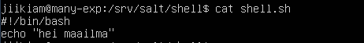
Kokeillaan sheelscriptin toimiminen käsin.
chmod 755 shell.sh
./shell.sh
Ajetaan scripti saltilla orjalle.
sudo salt '*' state.apply shell
Tarkistetaan toimiiko orjalla shellscript ja käydään katsomassa kansion oikeudet.
shell
cd /usr/local/bin
ls -l
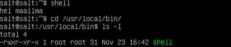
b) whatsup.sh. Tee järjestelmään uusi komento, joka kertoo ajankohtaisia tietoja; asenna
se orjille. Vinkkejä: Voit näyttää valintasi mukaan esimerkiksi päivämäärää, säätä, tietoja
koneesta, verkon tilanteesta...
Sama kuin kohdassa a), mutta luodaan kansio ja scripti nimellä whatsup. Kirjoitetaan scriptiin
mitä tietoja halutaan nähdä.
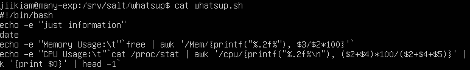
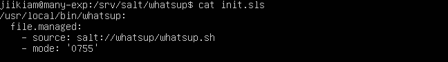
Ajetaan komento saltilla ja tarkistetaan tulos orjalla.
sudo salt '*' state.apply whatsup
whatsup
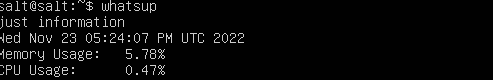
c) hello.py. Tee järjestelmään uusi komento Pythonilla ja asenna se orjille. Vinkkejä: Hei
maailma riittää, mutta propellihatut saavat toki koodaillakin. Shebang on "#!/usr/bin/python3".
Helpoin Python-komento on: print("Hei Tero!")
Mennään /srv/salt kansioon ja luodaan sinne uusi kansio shell.
cd /srv/salt
sudo mkdir tervepy
cd tervepy
Luodaan kansioon init.sls ja python komento. Kirjoitetaan kansiohin seuraavasti.
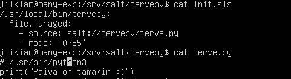
Ajetaan komento saltilla ja Tarkistetaan tulos orjalla.
sudo salt '*' state.apply tervepy
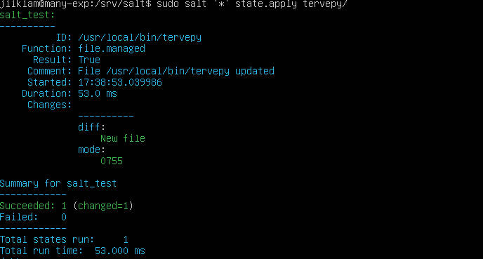
tervepy
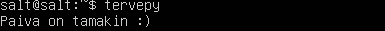
d) Laiskaa skriptailua. Tee kansio, josta jokainen skripti kopioituu orjille.
Tehdään uusi kansio tervemaailma. tervemaailma kansioon init.sls sekä uusi kansio packages.
cd /srv/salt
sudo mkdir tervemaailma
cd tervemaailma
sudo nano init.sls
 sudo mkdir packages
Kansioon packages tehdään tarvittavat scriptit
cd packages
sudo nano helloworld.sh
sudo nano helloworld1.py
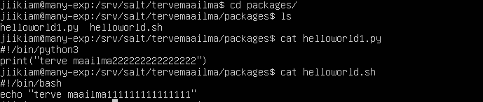
Ajetaan kansio orjalle.
sudo salt '*' state.apply tervemaailma
Näytti menneen läpi, mutta tarkistetaan orjalla tilanne.
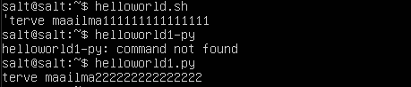
Kansiot ovat siirtyneet onnistuneesti orjalle.
e) Intel. Etsi kolme loppuprojektia joltain vanhalta kurssitoteutukselta. Kuvaile projektit
tiiviisti, viittaa ja linkitä alkuperäiseeen raporttin. Tässä alakohdassa ei tarvitse vielä
kokeilla mitään koneella, vaan voit kuvailla niitä oheismateriaalin perusteella.
---
e) Lukua, ei luottamusta. Kokeile yhtä kohdassa d-Intel löytämääsi modulia koneella. Tämä
on infraa koodina, joten luottamusta ei tarvita. Voit lukea koodista, mitä olet ajamassa.
---
sudo mkdir packages
Kansioon packages tehdään tarvittavat scriptit
cd packages
sudo nano helloworld.sh
sudo nano helloworld1.py
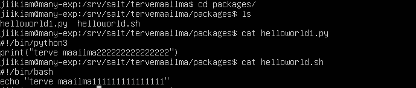
Ajetaan kansio orjalle.
sudo salt '*' state.apply tervemaailma
Näytti menneen läpi, mutta tarkistetaan orjalla tilanne.
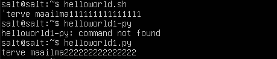
Kansiot ovat siirtyneet onnistuneesti orjalle.
e) Intel. Etsi kolme loppuprojektia joltain vanhalta kurssitoteutukselta. Kuvaile projektit
tiiviisti, viittaa ja linkitä alkuperäiseeen raporttin. Tässä alakohdassa ei tarvitse vielä
kokeilla mitään koneella, vaan voit kuvailla niitä oheismateriaalin perusteella.
---
e) Lukua, ei luottamusta. Kokeile yhtä kohdassa d-Intel löytämääsi modulia koneella. Tämä
on infraa koodina, joten luottamusta ei tarvita. Voit lukea koodista, mitä olet ajamassa.
---